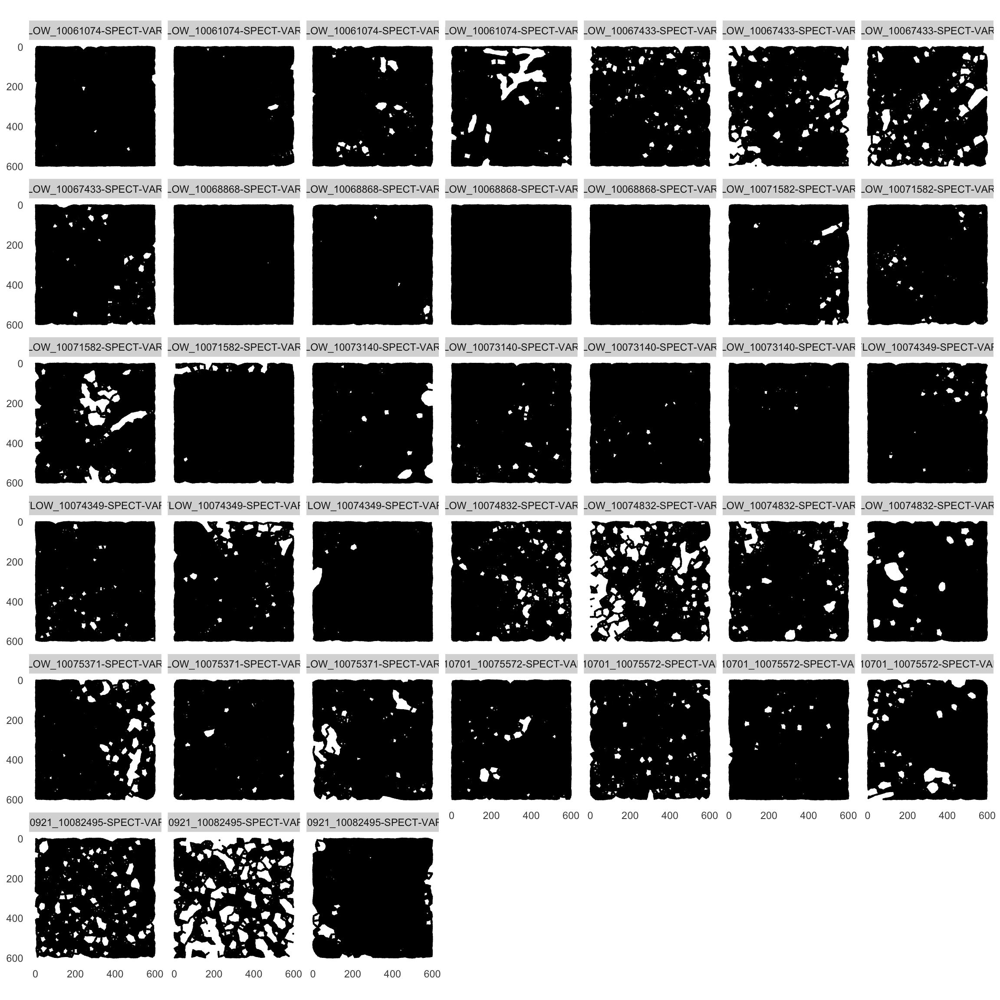
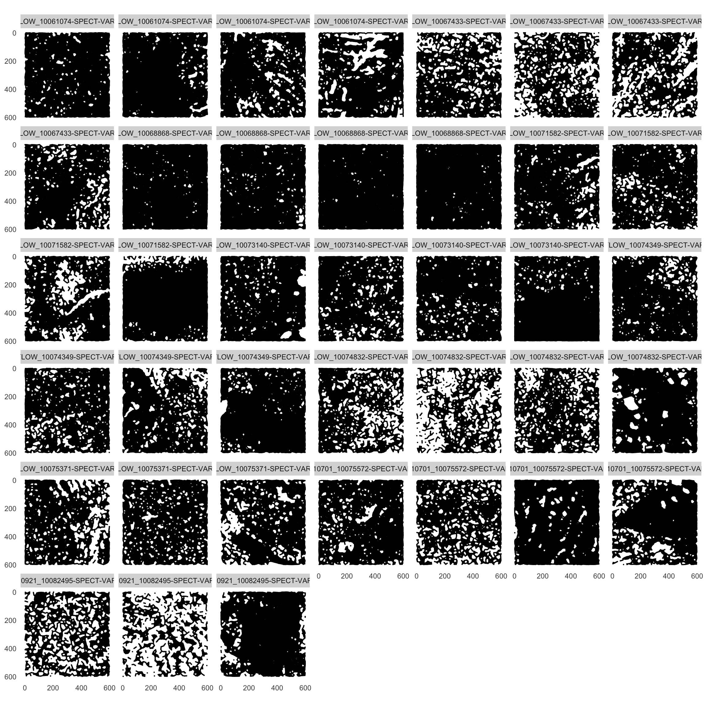
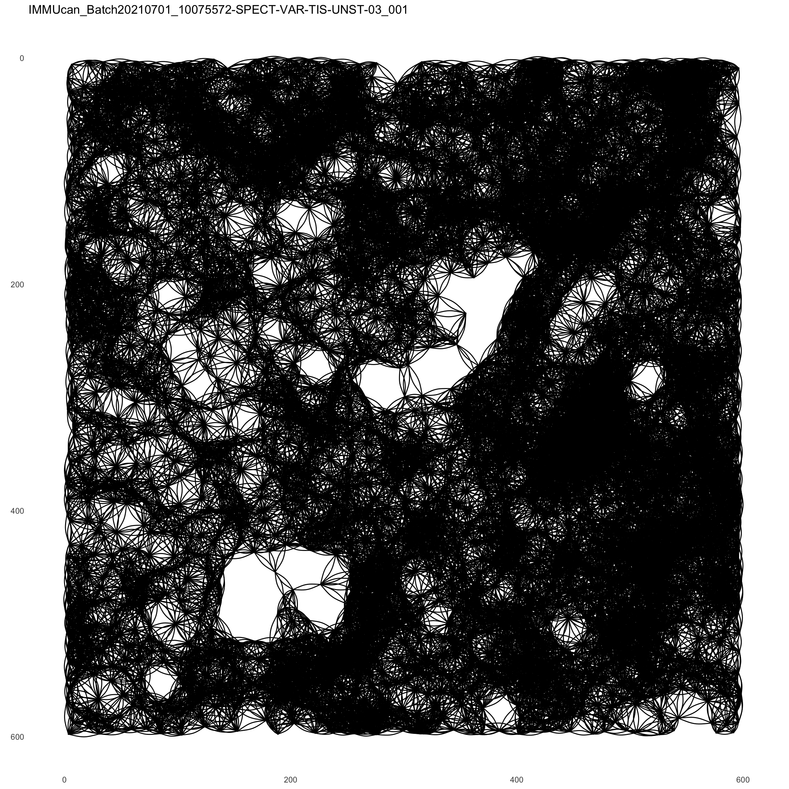
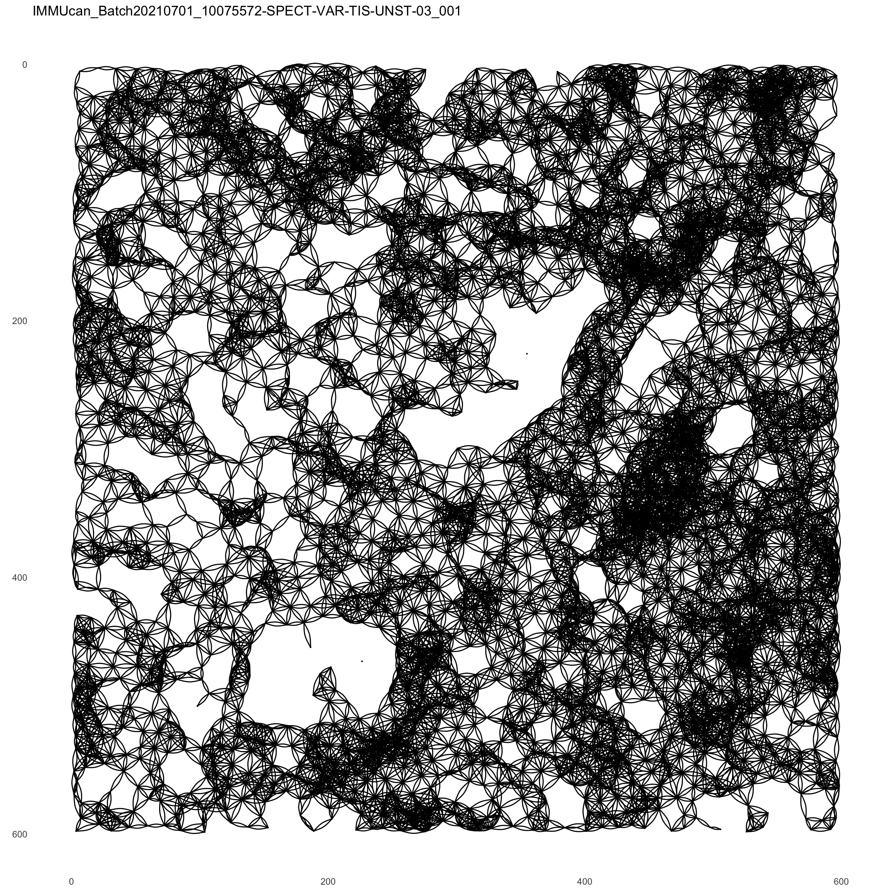

Last updated: 2023-11-15
Checks: 7 0
Knit directory: IMMUcanWorkflow2021/
This reproducible R Markdown analysis was created with workflowr (version 1.7.1). The Checks tab describes the reproducibility checks that were applied when the results were created. The Past versions tab lists the development history.
Great! Since the R Markdown file has been committed to the Git repository, you know the exact version of the code that produced these results.
Great job! The global environment was empty. Objects defined in the global environment can affect the analysis in your R Markdown file in unknown ways. For reproduciblity it’s best to always run the code in an empty environment.
The command set.seed(20231009) was run prior to running
the code in the R Markdown file. Setting a seed ensures that any results
that rely on randomness, e.g. subsampling or permutations, are
reproducible.
Great job! Recording the operating system, R version, and package versions is critical for reproducibility.
Nice! There were no cached chunks for this analysis, so you can be confident that you successfully produced the results during this run.
Great job! Using relative paths to the files within your workflowr project makes it easier to run your code on other machines.
Great! You are using Git for version control. Tracking code development and connecting the code version to the results is critical for reproducibility.
The results in this page were generated with repository version 666d2bb. See the Past versions tab to see a history of the changes made to the R Markdown and HTML files.
Note that you need to be careful to ensure that all relevant files for
the analysis have been committed to Git prior to generating the results
(you can use wflow_publish or
wflow_git_commit). workflowr only checks the R Markdown
file, but you know if there are other scripts or data files that it
depends on. Below is the status of the Git repository when the results
were generated:
Ignored files:
Ignored: .DS_Store
Ignored: .Rproj.user/
Ignored: analysis/.DS_Store
Ignored: code/.DS_Store
Ignored: code/alignment_validation/
Ignored: output/.DS_Store
Note that any generated files, e.g. HTML, png, CSS, etc., are not included in this status report because it is ok for generated content to have uncommitted changes.
These are the previous versions of the repository in which changes were
made to the R Markdown (analysis/02.1_IMC_read_data.Rmd)
and HTML (docs/02.1_IMC_read_data.html) files. If you’ve
configured a remote Git repository (see ?wflow_git_remote),
click on the hyperlinks in the table below to view the files as they
were in that past version.
| File | Version | Author | Date | Message |
|---|---|---|---|---|
| Rmd | 666d2bb | nilseling | 2023-11-15 | Adjusted to correct spillover matrix |
| Rmd | 795672b | nilseling | 2023-10-09 | Restructured repository |
In this script, we read in the single-cell and image data generated by the steinbock framework.
First, we will load the libraries needed for this part of the analysis.
library(S4Vectors)
library(SingleCellExperiment)Warning: package 'GenomeInfoDb' was built under R version 4.3.2library(tidyverse)
library(imcRtools)
library(tools)We use imcRtools to read in the data:
sce <- read_steinbock("/Volumes/G_DQBM_BB_Central$/projects/immucan/processed_data/Panel_1/2022_WORKFLOW/IMC/",
return_as = "sce",
extract_imagemetadata_from = c("width_px", "height_px",
"acquisition_id"))
sce$image <- paste0(sce$sample_id, ".tiff")
sce$patient_id <- sub("_", "", str_extract(sce$image, "_[0-9]{8}"))
assay(sce, "exprs") <- asinh(counts(sce))
# Specify interesting channels
rowData(sce)$use_channel <- !grepl("DNA|HistoneH3", rownames(sce))Here, we will collect all relevant image-level metadata for these samples. These will be added to the cell-level metadata.
meta <- read.csv("data/sample_metadata.csv")
meta$patient_id <- as.character(meta$patient_id)
cell_meta <- left_join(as.data.frame(colData(sce)), meta,
by = "patient_id")
all.equal(paste(cell_meta$image, cell_meta$ObjectNumber),
paste(sce$image, sce$ObjectNumber))[1] TRUEcolData(sce) <- as(cell_meta, "DataFrame")
sce$ROI <- sub("_", "", str_extract(sce$image, "_00[1-9]"))At this point we want to generate color vectors that we can reproducibly and consistently use throughout the analysis. Primarily, we will define colors for 1. the samples, 2. the ROI, 3. the indication.
library(dittoSeq)
library(RColorBrewer)
color_vectors <- list()
matched_celltype <- setNames(c("sienna4", "magenta3", "skyblue3", "green3", "grey75", "green4", "#BF0A3D", "#F4800C"),
c("Tumor", "T", "Neutrophil", "MacCD163",
"other", "DC", "B", "BnT"))
patient_id <- setNames(c("#BE1E2D", "#FF4B5B", "#F7941D", "#FFCA89", "#00A651", "#5FFF73", "#00AEEF", "#9BD7FF", "#2E3192", "#675BFF"),
c("10061074", "10067433", "10068868", "10071582", "10073140", "10074349", "10074832", "10075371", "10075572", "10082495"))
col_vec_ROIs <- colorRampPalette(c("dark green", "white", "dark red"))(length(unique(sce$ROI)))
names(col_vec_ROIs) <- unique(sce$ROI)
col_vec_indication <- c(CRC = "#5B1C55", SCCHN = "#39BEB4", NSCLC = "#F79C1D",
BCC = "#3F85A7", RCC = "#C81F43")
celltype <- setNames(c("#BF0A3D", "goldenrod1", "palevioletred1",
"darkorchid", "maroon3", "#F4800C",
"green4", "darkgreen",
"green3", "skyblue3", "yellow2",
"deepskyblue", "tomato", "sienna4",
"grey75"),
c("B", "plasma", "CD4", "CD8", "Treg", "BnT",
"DC", "HLADR", "MacCD163", "Neutrophil",
"NK", "pDC", "Mural", "Tumor", "undefined"))
color_vectors$celltype <- celltype
color_vectors$patient_id <- patient_id
color_vectors$ROIs <- col_vec_ROIs
color_vectors$Indication <- col_vec_indication
color_vectors$matched_celltype <- matched_celltype
# Save in metadata slot
metadata(sce)$color_vectors <- color_vectorsFinally, we will add a 20µm and 30µm expansion interaction graph to compare to mIF.
library(imcRtools)
sce <- buildSpatialGraph(sce, img_id = "sample_id", type = "expansion",
threshold = 20, name = "expansion_20")
sce <- buildSpatialGraph(sce, img_id = "sample_id", type = "expansion",
threshold = 30, name = "expansion_30")
plotSpatial(sce, img_id = "sample_id",
draw_edges = TRUE, colPairName = "expansion_30", node_size_fix = 0.1,
nodes_first = TRUE)
plotSpatial(sce, img_id = "sample_id",
draw_edges = TRUE, colPairName = "expansion_20", node_size_fix = 0.1,
nodes_first = TRUE)
plotSpatial(sce[,sce$sample_id == "IMMUcan_Batch20210701_10075572-SPECT-VAR-TIS-UNST-03_001"],
img_id = "sample_id",
draw_edges = TRUE, colPairName = "expansion_30", node_size_fix = 0.1,
nodes_first = TRUE)
plotSpatial(sce[,sce$sample_id == "IMMUcan_Batch20210701_10075572-SPECT-VAR-TIS-UNST-03_001"],
img_id = "sample_id",
draw_edges = TRUE, colPairName = "expansion_20", node_size_fix = 0.1,
nodes_first = TRUE)
Finally, for easy accessability, we will write the SCE object out. The object will be stored on the server so that everyone can work with it.
cur_dir <- "/Volumes/G_DQBM_BB_Central$/projects/immucan/processed_data/Panel_1/2022_WORKFLOW/IMC/Rout/"
if (!dir.exists(cur_dir)) dir.create(cur_dir)
saveRDS(sce, "/Volumes/G_DQBM_BB_Central$/projects/immucan/processed_data/Panel_1/2022_WORKFLOW/IMC/Rout/sce.rds")Here, we read in the images and masks and save them on disk.
library(cytomapper)
images <- loadImages("/Volumes/G_DQBM_BB_Central$/projects/immucan/processed_data/Panel_1/2022_WORKFLOW/IMC/img/")
masks <- loadImages("/Volumes/G_DQBM_BB_Central$/projects/immucan/processed_data/Panel_1/2022_WORKFLOW/IMC/masks/",
as.is = TRUE)
channelNames(images) <- rownames(sce)
mcols(images) <- mcols(masks) <- DataFrame(image = names(images),
sample_id = sub(".tiff", "", names(images)))
saveRDS(images, "/Volumes/G_DQBM_BB_Central$/projects/immucan/processed_data/Panel_1/2022_WORKFLOW/IMC/Rout/images.rds")
saveRDS(masks, "/Volumes/G_DQBM_BB_Central$/projects/immucan/processed_data/Panel_1/2022_WORKFLOW/IMC/Rout/masks.rds")
sessionInfo()R version 4.3.1 (2023-06-16)
Platform: x86_64-apple-darwin20 (64-bit)
Running under: macOS Big Sur 11.7.10
Matrix products: default
BLAS: /Library/Frameworks/R.framework/Versions/4.3-x86_64/Resources/lib/libRblas.0.dylib
LAPACK: /Library/Frameworks/R.framework/Versions/4.3-x86_64/Resources/lib/libRlapack.dylib; LAPACK version 3.11.0
locale:
[1] en_US.UTF-8/en_US.UTF-8/en_US.UTF-8/C/en_US.UTF-8/en_US.UTF-8
time zone: Europe/Zurich
tzcode source: internal
attached base packages:
[1] tools stats4 stats graphics grDevices utils datasets
[8] methods base
other attached packages:
[1] cytomapper_1.14.0 EBImage_4.44.0
[3] RColorBrewer_1.1-3 dittoSeq_1.14.0
[5] imcRtools_1.8.0 SpatialExperiment_1.12.0
[7] lubridate_1.9.3 forcats_1.0.0
[9] stringr_1.5.0 dplyr_1.1.3
[11] purrr_1.0.2 readr_2.1.4
[13] tidyr_1.3.0 tibble_3.2.1
[15] ggplot2_3.4.4 tidyverse_2.0.0
[17] SingleCellExperiment_1.24.0 SummarizedExperiment_1.32.0
[19] Biobase_2.62.0 GenomicRanges_1.54.1
[21] GenomeInfoDb_1.38.1 IRanges_2.36.0
[23] MatrixGenerics_1.14.0 matrixStats_1.1.0
[25] S4Vectors_0.40.1 BiocGenerics_0.48.1
[27] workflowr_1.7.1
loaded via a namespace (and not attached):
[1] later_1.3.1 bitops_1.0-7
[3] svgPanZoom_0.3.4 polyclip_1.10-6
[5] lifecycle_1.0.4 sf_1.0-14
[7] rprojroot_2.0.4 processx_3.8.2
[9] lattice_0.22-5 vroom_1.6.4
[11] MASS_7.3-60 magrittr_2.0.3
[13] sass_0.4.7 rmarkdown_2.25
[15] jquerylib_0.1.4 yaml_2.3.7
[17] httpuv_1.6.12 sp_2.1-1
[19] cowplot_1.1.1 DBI_1.1.3
[21] abind_1.4-5 zlibbioc_1.48.0
[23] ggraph_2.1.0 RCurl_1.98-1.13
[25] tweenr_2.0.2 git2r_0.32.0
[27] GenomeInfoDbData_1.2.11 ggrepel_0.9.4
[29] RTriangle_1.6-0.12 terra_1.7-55
[31] pheatmap_1.0.12 units_0.8-4
[33] svglite_2.1.2 DelayedMatrixStats_1.24.0
[35] codetools_0.2-19 DelayedArray_0.28.0
[37] DT_0.30 scuttle_1.12.0
[39] ggforce_0.4.1 tidyselect_1.2.0
[41] raster_3.6-26 farver_2.1.1
[43] viridis_0.6.4 jsonlite_1.8.7
[45] BiocNeighbors_1.20.0 e1071_1.7-13
[47] ellipsis_0.3.2 tidygraph_1.2.3
[49] ggridges_0.5.4 systemfonts_1.0.5
[51] Rcpp_1.0.11 glue_1.6.2
[53] gridExtra_2.3 SparseArray_1.2.2
[55] xfun_0.40 HDF5Array_1.30.0
[57] shinydashboard_0.7.2 withr_2.5.2
[59] fastmap_1.1.1 rhdf5filters_1.14.0
[61] fansi_1.0.5 callr_3.7.3
[63] digest_0.6.33 timechange_0.2.0
[65] R6_2.5.1 mime_0.12
[67] colorspace_2.1-0 jpeg_0.1-10
[69] utf8_1.2.4 generics_0.1.3
[71] data.table_1.14.8 class_7.3-22
[73] graphlayouts_1.0.1 httr_1.4.7
[75] htmlwidgets_1.6.2 S4Arrays_1.2.0
[77] whisker_0.4.1 pkgconfig_2.0.3
[79] gtable_0.3.4 XVector_0.42.0
[81] htmltools_0.5.6.1 fftwtools_0.9-11
[83] scales_1.2.1 png_0.1-8
[85] knitr_1.45 rstudioapi_0.15.0
[87] tzdb_0.4.0 rjson_0.2.21
[89] proxy_0.4-27 cachem_1.0.8
[91] rhdf5_2.46.0 KernSmooth_2.23-22
[93] parallel_4.3.1 vipor_0.4.5
[95] concaveman_1.1.0 pillar_1.9.0
[97] grid_4.3.1 vctrs_0.6.4
[99] promises_1.2.1 distances_0.1.9
[101] beachmat_2.18.0 xtable_1.8-4
[103] archive_1.1.5 beeswarm_0.4.0
[105] evaluate_0.23 magick_2.8.1
[107] cli_3.6.1 locfit_1.5-9.8
[109] compiler_4.3.1 rlang_1.1.2
[111] crayon_1.5.2 labeling_0.4.3
[113] classInt_0.4-10 ps_1.7.5
[115] getPass_0.2-2 fs_1.6.3
[117] ggbeeswarm_0.7.2 stringi_1.7.12
[119] viridisLite_0.4.2 BiocParallel_1.36.0
[121] nnls_1.5 munsell_0.5.0
[123] tiff_0.1-11 Matrix_1.6-1.1
[125] hms_1.1.3 sparseMatrixStats_1.14.0
[127] bit64_4.0.5 Rhdf5lib_1.24.0
[129] shiny_1.7.5.1 highr_0.10
[131] igraph_1.5.1 bslib_0.5.1
[133] bit_4.0.5